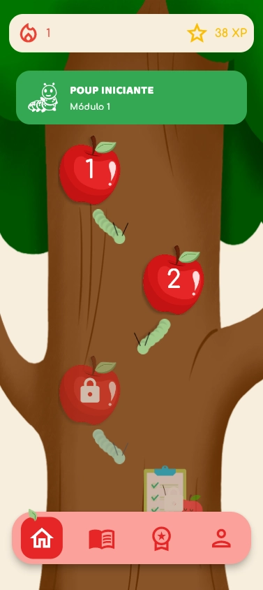
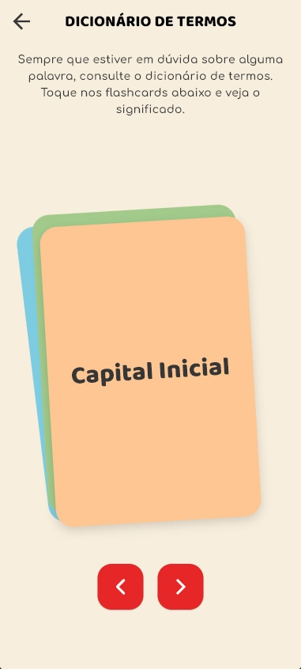
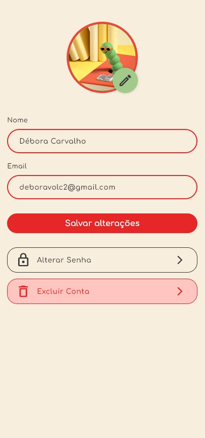
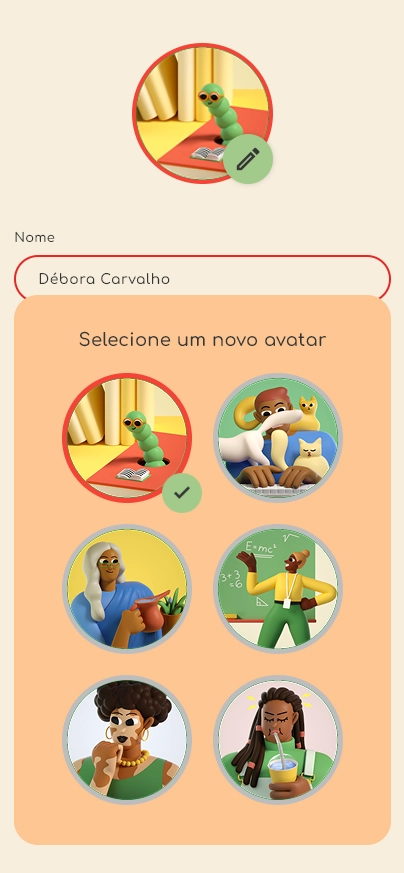
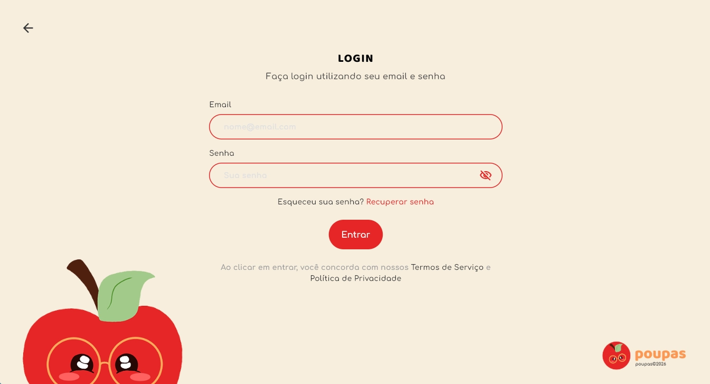

Mobile & desktop · Educação financeira
Poupas
Educação financeira para o público infantojuvenil, com lições e recursos de gamificação.

O projeto
O Poupas transforma conteúdos de matemática financeira em uma experiência de aprendizagem para crianças e adolescentes. O aplicativo reúne trilha de lições, exercícios, conquistas e um dicionário de termos.
Proposta e estrutura
O frontend foi desenvolvido em Flutter/Dart, com experiências para mobile e desktop. O projeto também possui uma API em C#/.NET e PostgreSQL, desenvolvida por outras integrantes da equipe.
Frontend Flutter & Scrum
Minha participação
- Desenvolvi telas e interações do frontend em Flutter/Dart, incluindo boas-vindas, login e alteração de avatar.
- Ajustei estilos, pop-ups, navegação e comportamento responsivo entre mobile e desktop.
- Contribuí com as páginas do dicionário e widgets de flashcards, conforme os registros de implementação no repositório.
- Mantive a organização das entregas e do trabalho em equipe.
Scrum e colaboração
Atuei como Scrum Master na organização do trabalho: estruturação do backlog, planejamento de sprints conforme os prazos da faculdade, divisão de tarefas e acompanhamento das entregas. Facilitei reuniões, alinhamentos e resolução de conflitos, além de apoiar a definição de requisitos e a documentação.
O que essa experiência acrescentou
Neste semestre, concentrei minha atuação técnica integralmente no frontend. Foi uma oportunidade de aprender Flutter e construir interfaces responsivas; não trabalhei no backend nem no banco de dados do Poupas.
Tecnologias
Na minha atuação
No projeto completo
O projeto em telas
Registros da aplicação desenvolvida pela equipe. As imagens mostram o produto completo; minha contribuição está descrita na seção acima.










Explore o projeto
Repositórios da organização TheLovelace com os arquivos e a documentação do projeto.